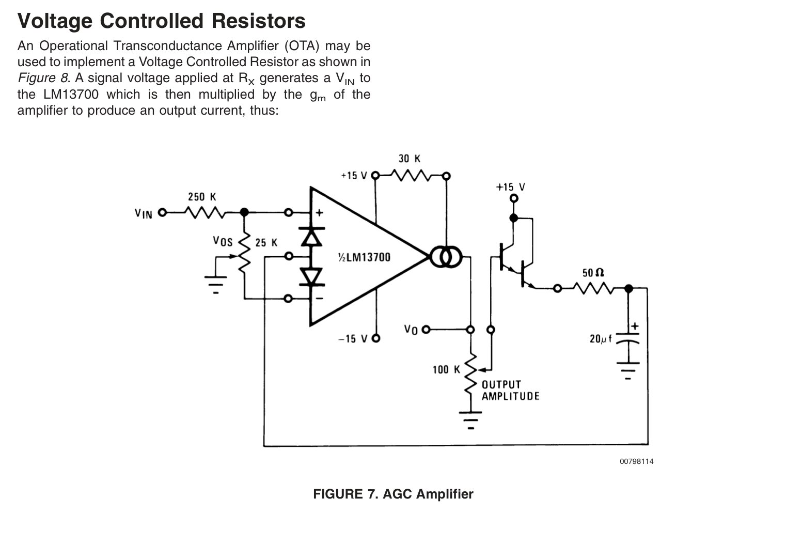

1. In the past few months, I have been assembling 500-series pre-amps for my audio "lunchbox." Although the DIY kits you can get online can be of very good quality and really fun to put together, i would like to see if i can design and build a couple of modules from scratch myself.
It would be amazing to build a vocoder, but unfortunately a quick search makes it seem like it's probably too much to pack in a 500-series module. A good preamp with an integrated EQ could be a good alternative!
2. Another interesting project would be to build small, clip-on microphones and a couple of dedicated effects pedals for them, for live amplification and processing of acoustic instruments.
---
20200416--UPDATE:
The lockdown-friendly final project will be closer to what I described in my work for week 10: a MIDI/analog audio communication system. After more tests, I think some additional materials I would need are:
Still TBD is whether I need to amplify the DAC 0-3.3V signal from the ESP32 to 0-9V
but will probably need to build a voltage-controlled resistor to act as the variable resistance of the potentiometer pin on the original fuzz? (Will discuss with TFs further but see picture below.)

Another option is to see if I can get a digipot, but I think I'd rather try to solve it ^this way.